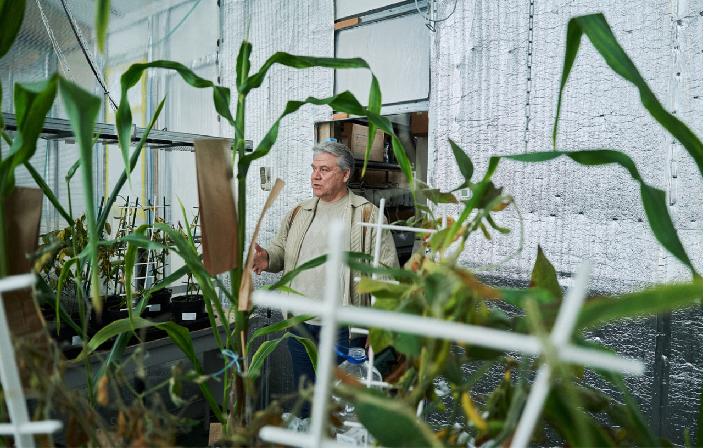

Genetic Engineering during Energy Terror
25.04.26
Genetic modification still frightens many people, says Bohdan Morhun, the Deputy Director for Research of the Institute of Cell Biology and Genetic Engineering. So we started our discussion with the description of the process:
“If we want to transfer a feature from one organism to another, we can take a piece of DNA from one organism, transplant it into another, and create favorable conditions for the DNA molecules to bond. This way, we can expect that a feature from the first organism will develop in the second one,” Bohdan says. It’s the basics of horizontal gene transfer.

This phenomenon happens in nature, but very rarely. We talk about artificial, purposeful gene transfer even between different reproductively incompatible species.
“We may imagine genetic engineering metaphorically this way: if we take a hedgehog and a snake and cross them, we get three meters of barbed wire,” Bohdan quotes a popular Ukrainian joke.

The technology for combining DNA molecules was developed back in 1973. It didn’t gain much traction at first, but it eventually grew into a separate scientific field. In 1983, the first plants with transferred genes were created. In 1985, in Kyiv, the first successful experiment in cell engineering in the USSR was conducted: a genetic construct was incorporated into plant cells. This was the first genetic modification using Agrobacterium, a natural genetic engineer that can “build” its genes into a plant genome and change it. Understanding this mechanism was a giant scientific breakthrough. It allowed scientists to “disarm” Agrobacterium, depriving it of its ability to cause disease.
In 1990, the Institute of Cell Biology and Genetic Engineering was founded in Kyiv.

With genetic engineering, we can significantly improve crops, make them resistant to diseases and pests, and maximize their yield capacity. In the world context, this is where the conflict between business interests lies: before bioengineering technologies were developed, these challenges were addressed with chemicals.
As a result of a number of campaigns against the use of GMOs, financed, among others, by manufacturers of agricultural chemicals, there is a widespread fear of genetic modification.
That’s why, in some countries (the USA, Argentina, Brazil, Spain), GM food plants are actively grown, while in others (Ukraine), much less so (and often clandestinely). But if we take, for example, cotton instead of food, GM varieties are grown almost everywhere.

Until recently, a 2007 law in Ukraine made the registration and legalization of GMOs as complicated as possible; however, in 2023, a new law was passed, written with the Institute’s consultation, which should make these processes easier and more streamlined. From now on, the rules of state registration, control, and monitoring of GMOs are harmonized with the European Union practices, and a State Register of Genetically Modified Organisms is launched.

Bohdan Morhun says that over the 30 years of GMO use, no scientifically verified harm has been detected worldwide, either to people or to the environment, but these products should be labeled in detail anyway. For example, if a person has a nut allergy and eats a different product containing nut DNA, it may trigger an allergic reaction.

Mykola Kuchuk, the Institute's Director, tells us about the latest advances from his colleagues. Last year, the researchers managed to transfer a venom protein gene from the saw-scaled viper, a Central Asian snake, into a plant system. This protein is a potent hemostatic agent, even for critical hemorrhages. It’s difficult to obtain it from snake venom in medicinal quantities and purify it of other substances, but if a plant were to synthesize it, producing the hemostatic agent could become significantly easier and more scalable, which, unfortunately, is incredibly important for Ukraine at war.

“The most important thing is we obtained a fully functional protein”, Mykola says, “it’s not simply the same amino acid sequence: it has all the same properties the snake venom has.” For a protein to be functional, it must fold into the correct 3D structure. Simply recreating the amino acid sequence isn't always enough.

Another project of the institute is the synthesis of bactericide proteins as an alternative to antibiotics. In nature, bacteria accumulate them when competing with other bacteria. These are very active and highly specific substances that can effectively destroy, for instance, Escherichia coli or Salmonella.

“The European Commission has prohibited prophylactic use of antibiotics in the rearing of livestock and poultry starting from 2022, and here we have a protein instead of an antibiotic, and moreover, it’s produced by plants”, Mykola Kuchuk notes. “This means we can feed these biotechnological plants to chickens or pigs. We calculated that for a ton of fodder, only a kilogram of our GM cabbage is needed. Besides, these proteins are effective against the antibiotic-resistant bacteria as well”.
Another strand of research is the decontamination of soils polluted by explosives and heavy metals because of the war: “It’s called bioremediation”, the director of the Institute says. “We are attempting to create plants that would have an additional gene to help them accumulate or neutralize dangerous substances to revitalize the soil”.

Among the institute’s developments are also edible vaccines as an alternative to injections, a tomato that synthesizes an antiviral protein interferon alfa, short-stalked spelt, gluten-free barley, herbicide-resistant corn, etc.
Our visit happened to be in the morning after a massive air raid on the capital. In the institution, the power was out.

To conduct research in genetic engineering, a wide variety of biological material is needed. That’s why the Institute has a unique plant collection, the beginnings of which date back to the 1990s. Mykola Kuchuk, along with colleagues, went on expeditions to Latin America and Africa to obtain samples of some of the species. There are even Antarctic plants in the collection. All are kept in a controlled environment: the temperature and lighting must be monitored.

Unfortunately, some of the work samples are lost due to power outages and unstable heating. An expensive laboratory cryogenic freezer fell out of service due to power spikes. But even a greater loss occurred when a collection of microorganism strains for research on plant genetic transformation, collected by the Institute over many years, deteriorated. Before the full-scale war, these strains were kept at -70° to -80°C. So the researchers have to solve maintenance issues besides scientific problems: they organize shifts to monitor cultivation rooms.

The laboratory rooms we visited were almost empty, as experiments are mostly paralyzed by power outages. The researchers stick to power outage schedules to finish what was planned when work is possible.

In the Department of Molecular Genetics' laboratory, we met Olha Pronina. She was analyzing microphotographs on her laptop, so the outage didn’t impede her work. Olha researches stomata of wheat, minuscule organs on the plant’s leaves for breathing, which are also key in defending it against fungal infections.

In another laboratory, Mykola Kuchuk shows us a “genetic cannon”. It’s a relatively small device, but it’s among the key ones in genetic engineering. Its functioning principle is this: DNA is applied to 20–40 nanometer gold particles, which are then “shot” at plant material that needs to be modified using helium in a vacuum at high velocity. This way, plant cells with modified DNA are created.

The Institute also has its own phytotron, an isolated space with an artificial climate for growing plants under controlled temperature, humidity, and lighting conditions. An uninterrupted power supply is necessary for its normal functioning, and only critical infrastructure in Kyiv has it. But the researchers are trying their best to adapt to power outage schedules.
Experimental specimens are growing in the phytotron: corn, soybean, tobacco, and beetroot. Corn cobs are wrapped in paper bags to prevent uncontrolled pollination.

Bohdan Morhun tells us that the Institute conducts research in a closed system, strictly complying with the laws currently in effect: “Everything starts with molecule modeling on a computer. Then we construct them from different DNA fragments. After that, we plant them into bacterial cells, then into plants we grow in the phytotron under strictly controlled conditions. Even if pollen is produced, it won’t fly outside and won’t harm the environment. All the accompanying biological material we obtain (bacteria or leaves) is collected and destroyed in an autoclave at 120° C under high pressure to completely break down any remaining DNA. And only after that, we take the trash outside.”

Besides the problem with keeping plants in the phytocollection and phytotron alive, power outages impact preserving biological samples in freezers at very low temperatures (from -40° to -70°C), the DNA extraction and amplification processes (the specialized equipment has to operate uninterrupted at least for two hours), operation of specialized laboratory equipment for sterilization, for transplanting cell cultures, etc.

Since 2014, the Institute has been volunteering by helping the armed forces, and after the full-scale invasion, four employees joined the military. Around 20% of the personnel relocated abroad; they are young, qualified professionals.
The deputy director is proud that all of them are employed in their respective fields, and he says that the Institute is trying to benefit from the brain drain: the contact with the former employees is maintained, and this way, the active experience exchange with foreign scientific centers is facilitated, and joint projects are carried out.
The reportage is published with the support of the Alfred P. Sloan Foundation.